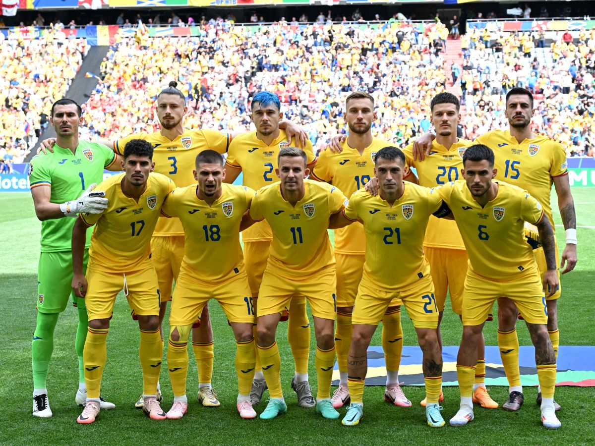
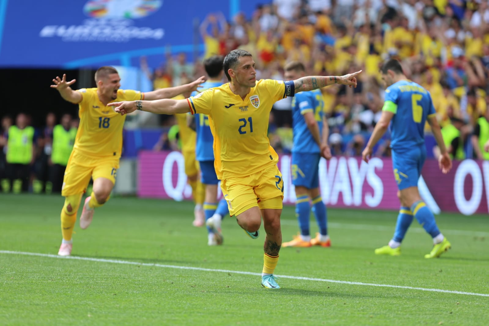
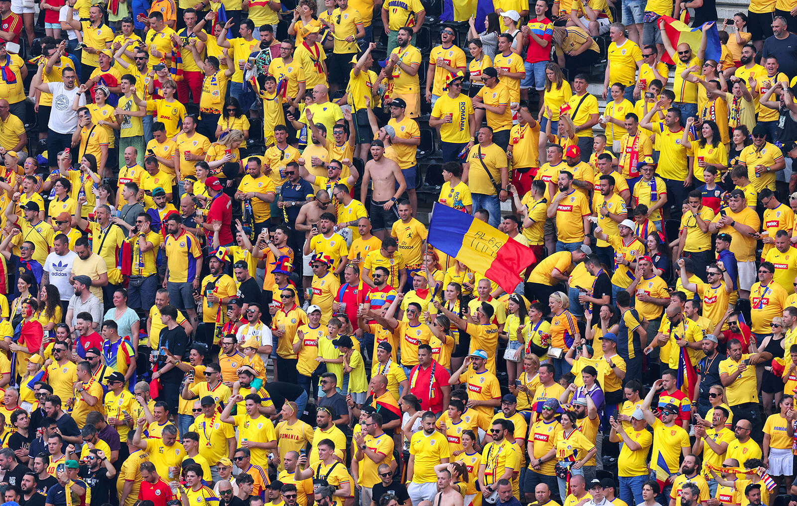
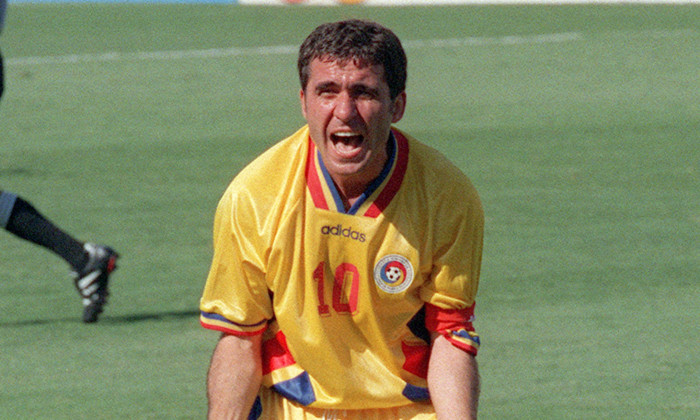
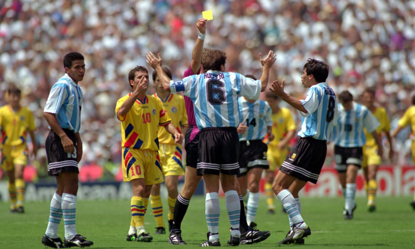
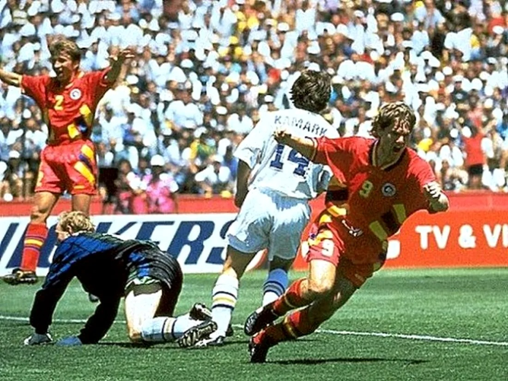

EURO 2024
România a reușit una dintre cele mai bune performanțe din ultimii 20 de ani, calificându-se în optimile de finală ale Campionatului European. Echipa a impresionat prin determinare și joc ofensiv. România a făcut de asemenea o figură bună la Euro 2000, când a obținut un 1-1 cu Germania și a învins Anglia cu 3-2 în grupe, și a ajuns în premieră în sferturile de finală, unde a fost învinsă de Italia.



Victoria cu Ucraina (3-0) a rămas un moment istoric, fiind cel mai categoric succes al României la un turneu final european,urmând o înfrângere cu Belgia (0-2) și un egal cu Slovacia.Cu aceste rezultate,România și-a asigurat prima poziție in grupă,însă a fost eliminată de Olanda cu scorul (0-3)
World Cup 1994
La 4 ani de la turneul din Italia, a urmat cel din Statele Unite, unde România a reușit cea mai mare performanță din istorie, calificarea în sferturile de finală. Hagi - cu un gol fantastic - și Răducioiu, au adus victoria în meciul contra Columbiei, dar în meciul următor, Bogdan Stelea a fost învins de 4 ori de șuturile lui Alain Sutter, Stephane Chapuisat și Adrian Knup. Dan Petrescu a marcat în poarta gazdelor turneului golul care a calificat România în optimile de finală, unde a întâlnit Argentina. Din nou, românii au eliminat echipa lui Maradona cum făcuseră și cu 4 ani în urmă, Hagi și Ilie Dumitrescu (2) marcând 3 goluri argentinienilor.



Victoria legendară împotriva Argentinei (3-2) este considerată una dintre cele mai bune prestații ale unei echipe naționale europene la acel turneu. În sferturile de finală, deși au fost considerați favoriți în fața suedezilor, Tomas Brolin și Kennet Andersson au marcat golurile care a dus partida la loviturile de departajare. După ratarea lui Hakan Mild și golurile lui Răducioiu, Hagi și Lupescu se părea că România nu mai poate scăpa calificarea în semifinale, unde ar fi urmat să întâlnească Brazilia lui Bebeto, dar ratările lui Dan Petrescu și Miodrag Belodedici au trimis România acasă, la doar 4 ani după ce Timofte ratase un penalty decisiv în fața Irlandei.